Editable vector explanations
Diagram gallery
A collection of 21 original scalable SVG diagrams. Each diagram remains crisp when printed or opened on a large monitor.
Layers of a computer
 Layers of a computer. Follow the arrows to identify where information travels and what each block contributes.
Layers of a computer. Follow the arrows to identify where information travels and what each block contributes.Download diagram SVG →
The binary signal path
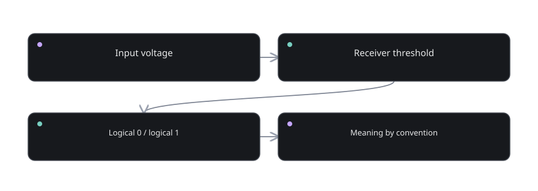
The binary signal path. Follow the arrows to identify where information travels and what each block contributes.Download diagram SVG →
Binary representation
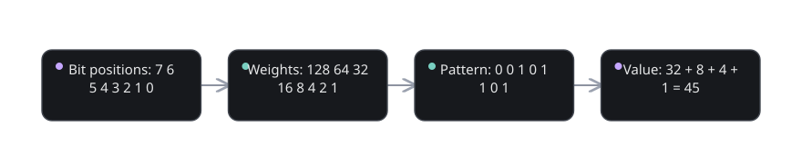
Binary representation. Follow the arrows to identify where information travels and what each block contributes.Download diagram SVG →
One-bit addition
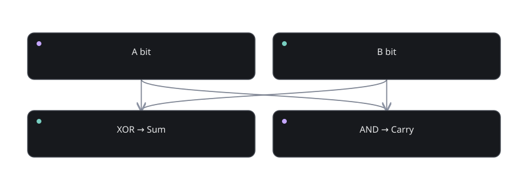
One-bit addition. Follow the arrows to identify where information travels and what each block contributes.Download diagram SVG →
Carry-aware addition
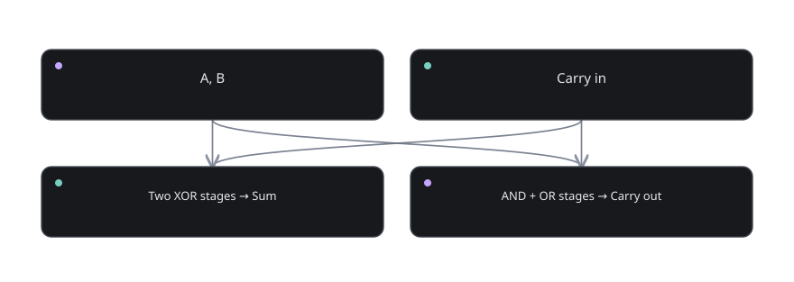
Carry-aware addition. Follow the arrows to identify where information travels and what each block contributes.Download diagram SVG →
Four-bit ripple adder
 Four-bit ripple adder. Follow the arrows to identify where information travels and what each block contributes.
Four-bit ripple adder. Follow the arrows to identify where information travels and what each block contributes.Download diagram SVG →
A two-way selector
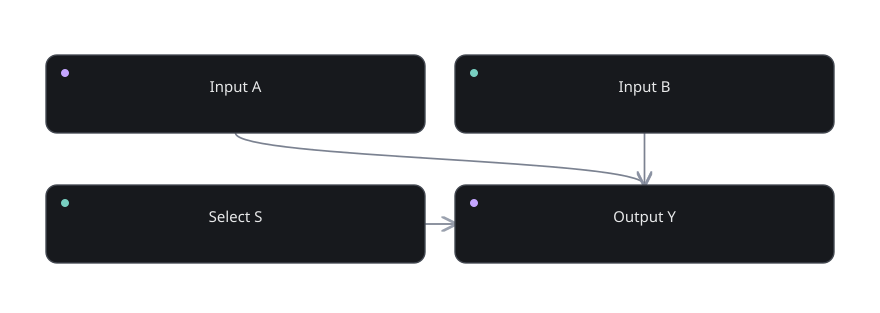
A two-way selector. Follow the arrows to identify where information travels and what each block contributes.Download diagram SVG →
Clocked storage
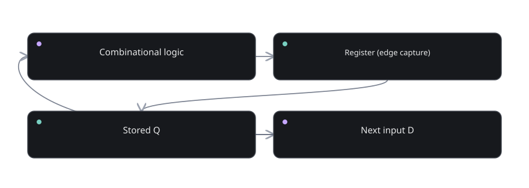
Clocked storage. Follow the arrows to identify where information travels and what each block contributes.Download diagram SVG →
Addressable memory
 Addressable memory. Follow the arrows to identify where information travels and what each block contributes.
Addressable memory. Follow the arrows to identify where information travels and what each block contributes.Download diagram SVG →
Shared data path
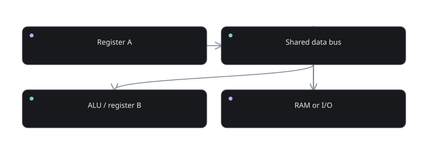
Shared data path. Follow the arrows to identify where information travels and what each block contributes.Download diagram SVG →
Minimal CPU architecture
 Minimal CPU architecture. Follow the arrows to identify where information travels and what each block contributes.
Minimal CPU architecture. Follow the arrows to identify where information travels and what each block contributes.Download diagram SVG →
Instruction cycle
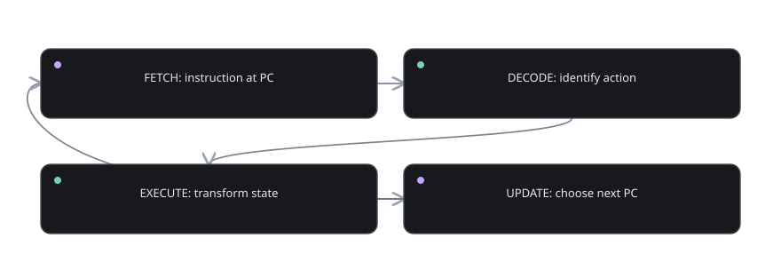
Instruction cycle. Follow the arrows to identify where information travels and what each block contributes.Download diagram SVG →
Decision and next address
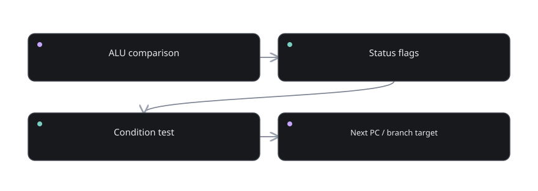
Decision and next address. Follow the arrows to identify where information travels and what each block contributes.Download diagram SVG →
Microcoded control
 Microcoded control. Follow the arrows to identify where information travels and what each block contributes.
Microcoded control. Follow the arrows to identify where information travels and what each block contributes.Download diagram SVG →
A program changes state
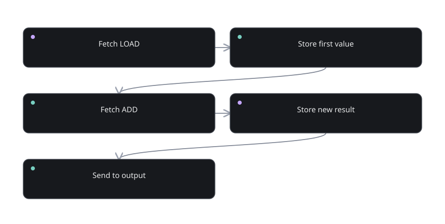
A program changes state. Follow the arrows to identify where information travels and what each block contributes.Download diagram SVG →
Fibonacci state update
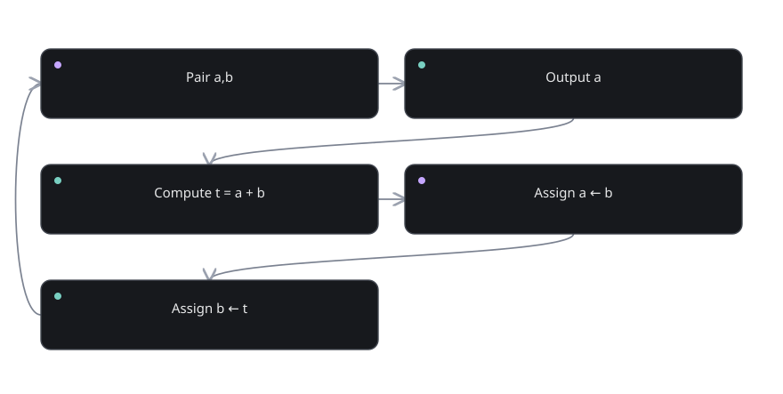
Fibonacci state update. Follow the arrows to identify where information travels and what each block contributes.Download diagram SVG →
ARM load/store model
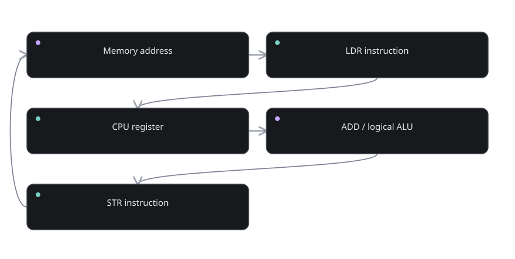
ARM load/store model. Follow the arrows to identify where information travels and what each block contributes.Download diagram SVG →
Output to the physical world
 Output to the physical world. Follow the arrows to identify where information travels and what each block contributes.
Output to the physical world. Follow the arrows to identify where information travels and what each block contributes.Download diagram SVG →
The software to hardware path
 The software to hardware path. Follow the arrows to identify where information travels and what each block contributes.
The software to hardware path. Follow the arrows to identify where information travels and what each block contributes.Download diagram SVG →
Instruction pipeline
Instruction pipeline. Follow the arrows to identify where information travels and what each block contributes.Download diagram SVG →
Memory hierarchy
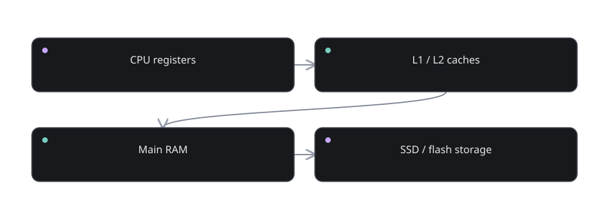
Memory hierarchy. Follow the arrows to identify where information travels and what each block contributes.Download diagram SVG →